| 日付 | 2007年10月28日（日） - 2007年10月29日（月） | ||||
|---|---|---|---|---|---|
| 山域 | 八ヶ岳 | ||||
| メンバー | 単独 | ||||
| 山行形態 | 1泊2日小屋泊 | ||||
| アクセス | 電車、バス | ||||
| ルート (Map) |
|
2日目
6:21 小屋出発。今日は周りが真白で天気が悪い。
風の音も相当に激しい。
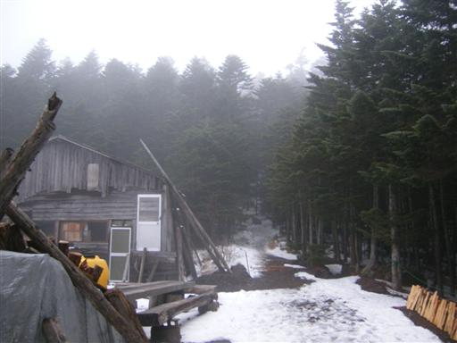
北横岳に到着。山頂も真白で展望ゼロ。
昨日のうちに来ておいてよかった。
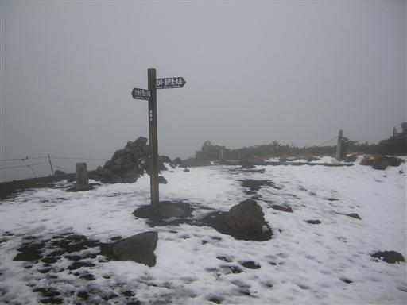
雪だるまは強風に吹き飛ばされて無残な姿を晒している…
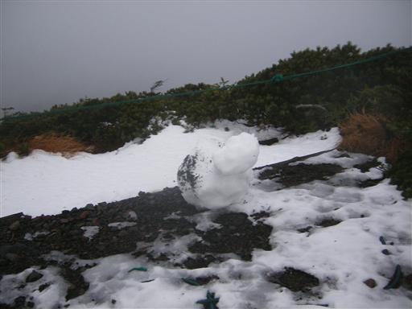
北横岳から北上する。
上空では風がうなっているが、樹林帯の中は無風。
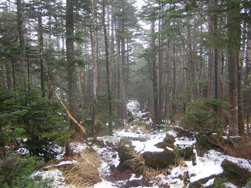
北横岳のお隣、大岳に到着。
遮るもののない山頂は、すさまじい風が吹き荒れている。

大岳から双子池に向かって下山する。
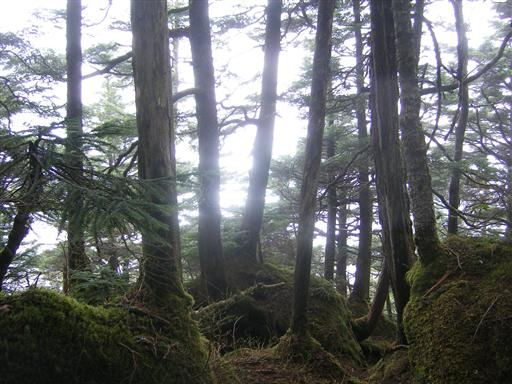
ようやく雲の下に出て、視界が開けるようになった。
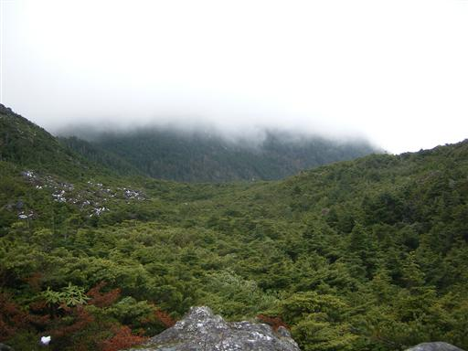
雲は標高2300m付近まで立ち込めている。
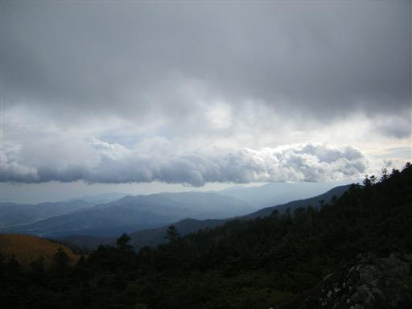
双子池に到着。
この池の水は飲めるようなので、水を補給する。
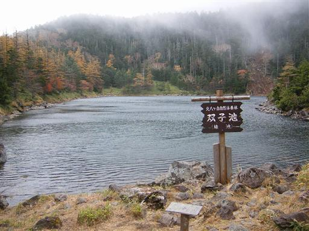
双子池の側に建つ双子池ヒュッテ。
明るく開けた雰囲気だが誰もおらずしんとしている。
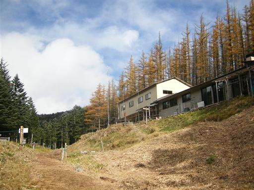
双子池のほとりに聳える双子山をめざす。
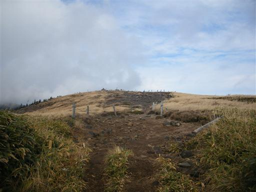
少し歩くと双子山山頂に到着する。標高2224m。
遮るものがないので、展望が良い分、吹きさらし状態。
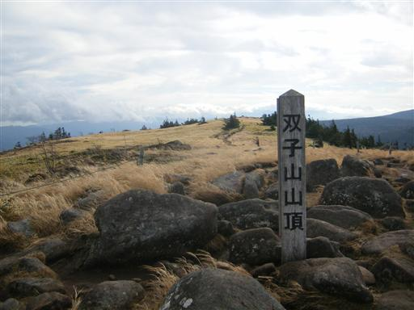
天気は回復傾向。遠くの浅間山は山頂まですっきり見える。
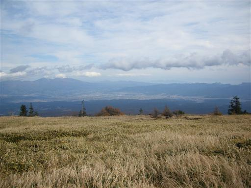
しかし、蓼科山の山頂部は白い雲に覆われたまま…
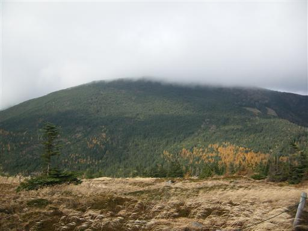
双子山を下山し、ここから蓼科山への登山道が始まる。
天気が悪いので足取りが重い。
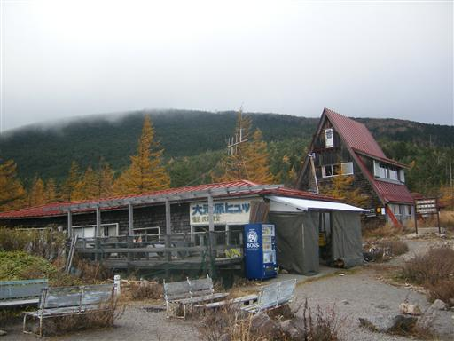
ゆるやかな傾斜の樹林帯を登っていく。
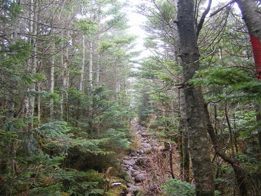
中腹に建つ蓼科山荘に到着。
ここで蓼科山の七合目登山口からの道と合わさる。
途端に人影が多くなる。

ここからは登山道が急坂になる。
山頂まで一直線に付けられた登山道をゆっくり登っていく。
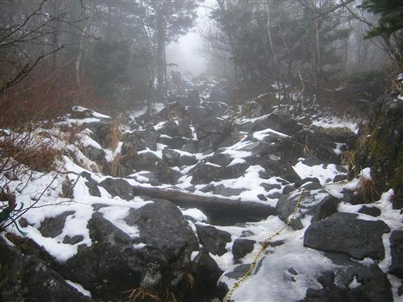
樹林帯を抜ける。頂上はもうすぐ。
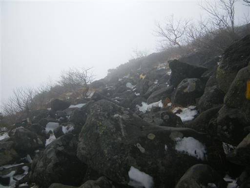
11:41 蓼科山山頂到着。標高2530m。
山頂に着いた途端、雲がはれる。
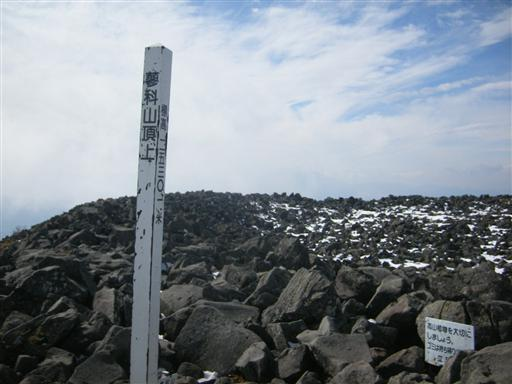
登山シーズンを過ぎた季節の平日にもかかわらず、登山者が結構いる。
さすがは人気の山。
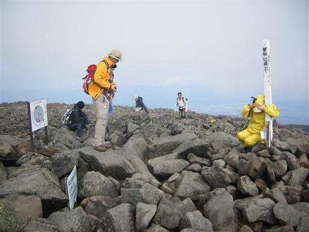
蓼科山の巨大な噴火口。
なぜか穴は空いておらず、噴火口跡は平ら。
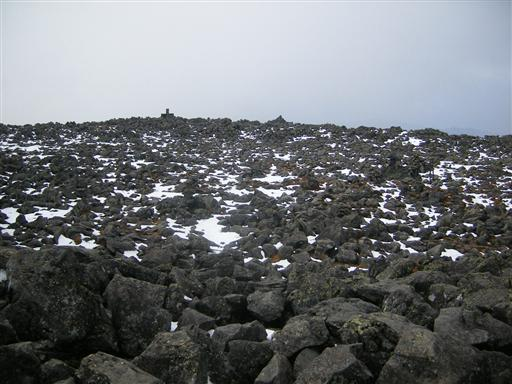
噴火口の中心部に祀られた蓼科神社奥宮。
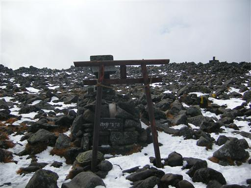
山頂からの展望。
霞んではいるが、雲が晴れたおかげで360度の視界が開ける。
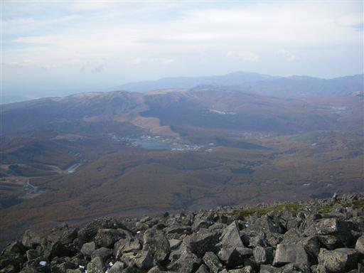
大きな裾野をひいた八ヶ岳も見える。
アルペン的な景観を誇る八ヶ岳も、遠くから見ると火山であることがよく分かる。

12:56 暴風の中、何とか昼食をとって下山開始。
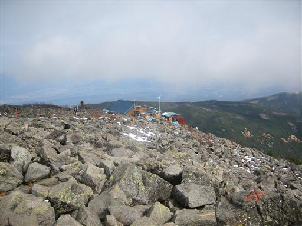
岩だらけの登山道を下っていく。
ほとんどの人は七合目からのピストン登山のようで、
こちらの道を歩いている人は全くいない。
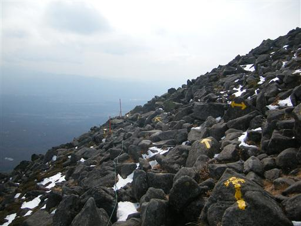
眺めの良い急坂をまっすぐ下っていく。
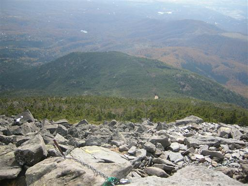
下のほうまで降りてくると、若干黄葉が残っている。
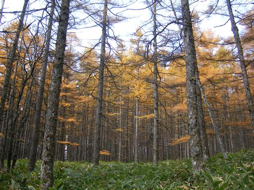
14:13 下山。標高1725m。
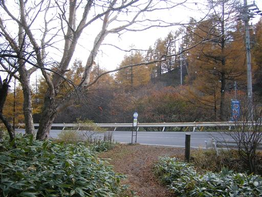
帰りのバスからは諏訪富士の別称を持つ蓼科山が綺麗に見える。
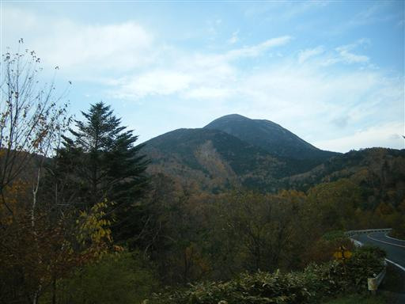
標高を落としていくと、紅葉がきれいになってくる。
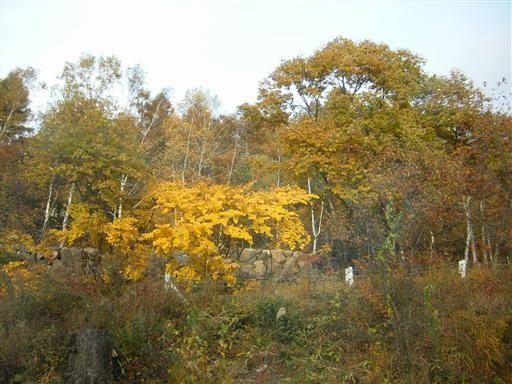
観光客が増えてきて、バスは満席。
平日でこれなら休日は…
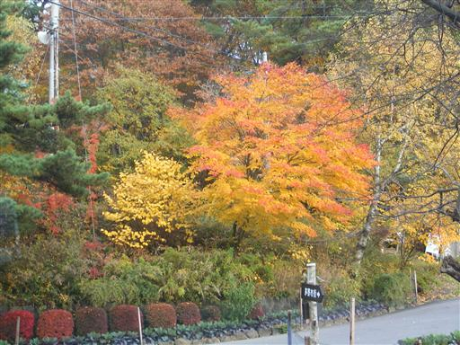
雲はほとんど消えて青空が見える。
下界からも雪をかぶった八ヶ岳がはっきり見える。
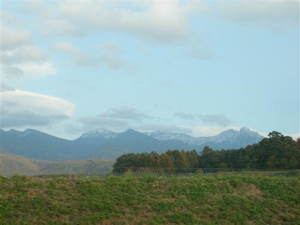
茅野駅から特急に乗って帰宅。
南アルプスの山々が連なる。